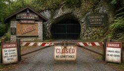

Closed Underground Tourist Sites

Germany has had tourist caves since the late 19th century, and tourist mines since the early 20th century. Over time, some of these have been closed down, whether because visitors stopped coming, because they were too small, because there was no longer an operator, or because the technical costs would have been too high. Some caves were also closed for environmental reasons, for example to protect bats. However, it was usually political events, such as wars, that led to their closure, and afterwards no one could be found to run them.
However, if one looks at the different types, it becomes clear that many former show mines have been closed. This is partly due to the high safety standards in Germany, which have also been tightened on several occasions. Mines are certainly dangerous; a cave that is already millions of years old does not simply collapse, whereas a tunnel which withstands the pressure of the mountain solely through its support structure will collapse if that structure (often made of wood) has rotted away. In the case of show caves, it is more often the relatively minimally developed, semi-wild ones that are simply abandoned at some point. However, these only appear on this list if they are actually closed, meaning gated. In many cases, though, you can still visit them safely on your own with a bit of common sense.
This page contains two lists. The first links to pages about sites that we had already described whilst they were still open to tourists. We have explicitly marked these pages as closed and, where known, explained why they were closed. Temporary closures, for example due to renovation work, are not included. The second list provides only rough details about the site, where known. These are all the sites that we had not listed, but which we would have listed.
- Kammerbacher Höhle
 Drei Kronen & Ehrt
Drei Kronen & Ehrt- Scholmzeche - Aufrichtigkeit
- Kupferschieferbergwerk Lange Wand
- Andreas-Gegentrum-Stolln
- Niedaltdorfer Tropfsteinhöhle
- Kristallgänge
- Historisches Schmucksteinbergwerk "Kittenrain"
- Heinrich-Kocher-Stollen
- Reichhartschacht
- Kahlensteinhöhle
 Museum Ulm
Museum Ulm- Vogelherdhöhlen
- Grube Otto
- Bergbaumuseum Sulzburg
| Name | Location | Coordinates | Comment |
|---|---|---|---|
| Thomas-Münzer-Schacht - Thomas-Müntzer-Schacht - Schacht Sangerhausen | Sangerhausen |  OpenStreetMap OpenStreetMap |
Mining operations ceased after German reunification, the mine was flooded, the headframe was demolished and the shaft filled in. The former storehouse, the workshop and the shaft cover can be viewed from the outside. It is sometimes referred to as a show mine or a mining museum, but in reality these are simply buildings that are now being reused as an industrial area. |
| Besucherbergwerk Silberstollen Geising | Geising | OpenStreetMap |
The village of Geising in the Eastern Ore Mountains bears many traces of mining. Silver and tin have been mined here since the Middle Ages; there were 15 stamp mills, 40 water wheels and 3 smelting works. It was here, in 1620, that the worst mining disaster in the Eastern Ore Mountains occurred, when a mine chamber collapsed, forming the Altenberger Pinge. Mining came to an end with German reunification; the Silberstollen was briefly operated as a show mine but was apparently closed as early as 1995. Today, only the mine entrance can be visited. |
 Search DuckDuckGo for "Closed Underground Tourist Sites"
Search DuckDuckGo for "Closed Underground Tourist Sites" Closed Underground Tourist Sites
Closed Underground Tourist Sites
 Index
Index Hierarchical
Hierarchical Countries
Countries Maps
Maps{kind=link}